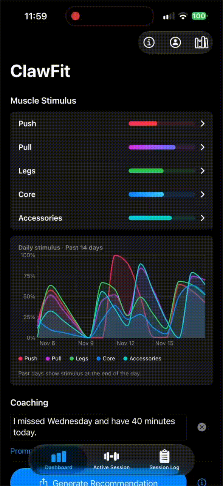
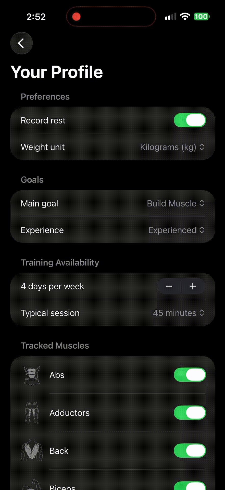
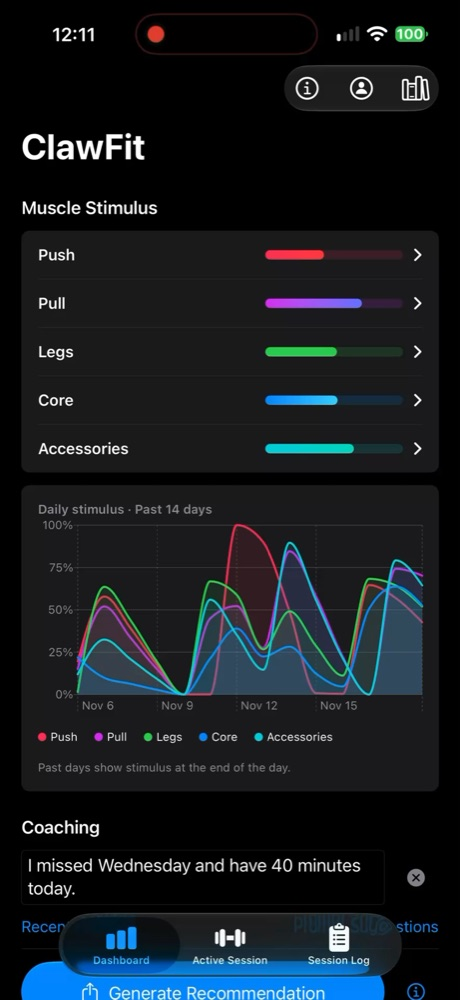
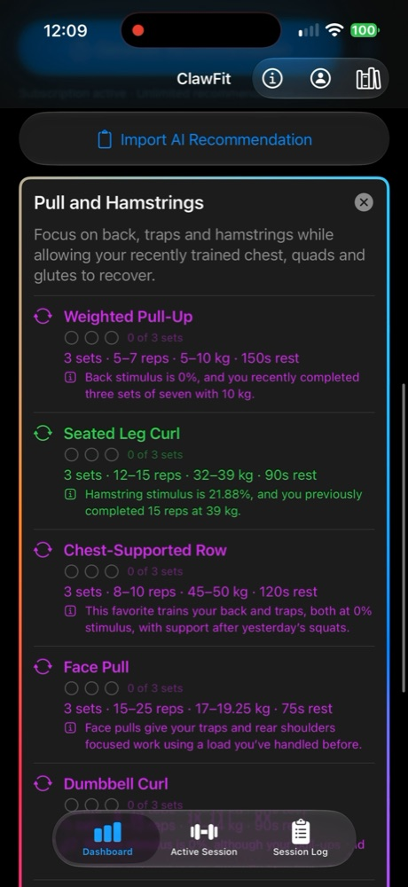
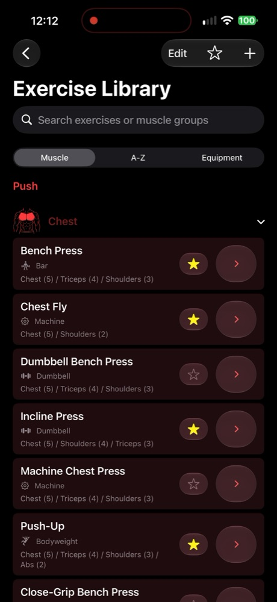
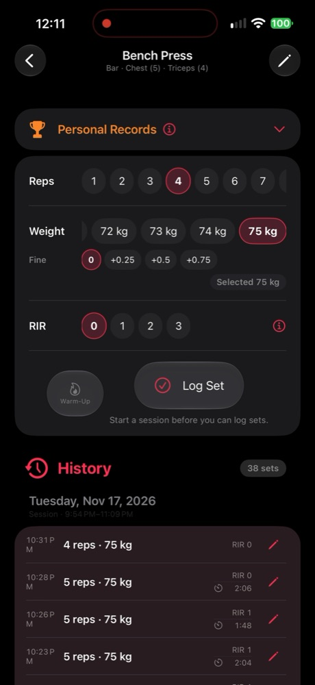
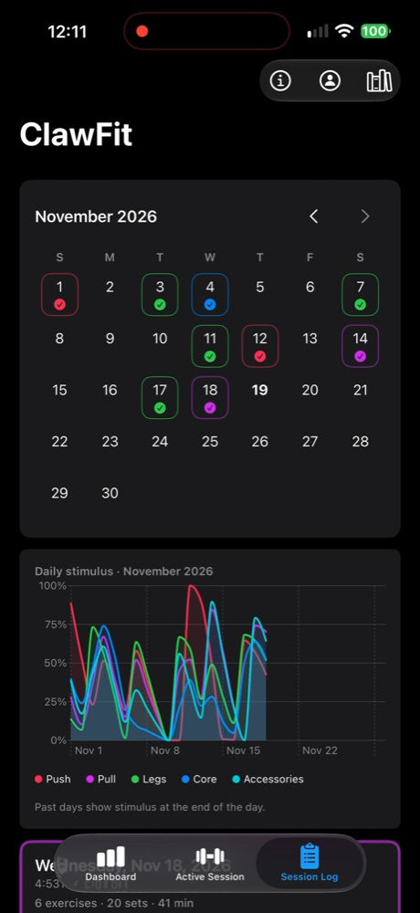
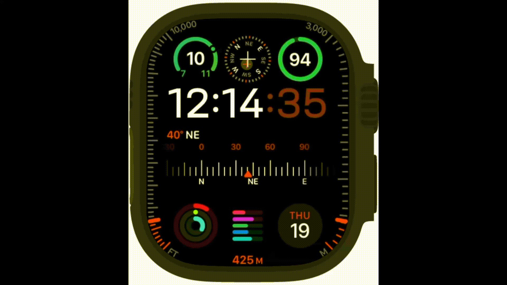

A workout that fits today.
Fixed routines do not work. Life happens. You skip a day. Some days you want to do more. Some jerk occupies the squat rack. You need to be FLEXIBLE.
Your AI is so good now, why not just ask it to give you a personalized workout every time you go to the gym? All it needs to know is your training profile, what you have done in the past, and what you want today. That's it!
Oh, by the way, I hate that all the apps doing something as simple as logging your bench press weight cost as much as a streaming subscription. That's another reason I built this. ALWAYS FREE workout tracking on iPhone and Apple Watch.
The only premium feature: Personalized prompt generation
$1.99 / month $14.99 / year
Trial included · Use it before you decide if it is useful to you

Make your AI your training coach.
Your favorite lifts, how you like to progress, and what you need to work around all shape your next workout. ClawFit brings that context together so your AI can pick up where you left off.
-
Build your training history
Set your goals and preferences, then log your lifts. ClawFit uses your recent sets, exercise progress, and muscle group coverage to prepare a prompt.
-
Ask the AI you already use
Add what's different today, like a shorter session, limited equipment, or an injury you're working around. Share the prompt with your AI and ask for your next workout.
-
Bring your workout back
Import the recommendation into ClawFit. Review it, swap exercises if you like, and log your sets as you train.
ClawFit includes a trial for personalized prompts. Continued prompt generation requires a ClawFit subscription. You use your own AI service.



Advanced workout tracking. Free, forever.
Something as simple as logging your squat sets shouldn't cost as much as your streaming subscription. ClawFit's workout logging and progression tools are free for every lifter.
- Log sets, reps, and weights
- Follow your progress and personal records
- See which muscle groups you've trained recently



ClawFit on your Apple Watch.
Start a session and log your sets from your wrist. You can also see your imported workout and pick exercises from your library.
Your training data syncs with ClawFit on your iPhone, so your history is there when you need it.

Support
Questions or feedback about ClawFit? Contact me!